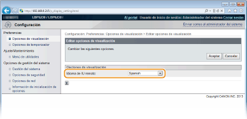
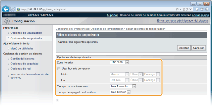
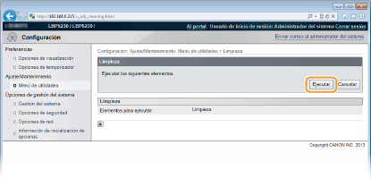
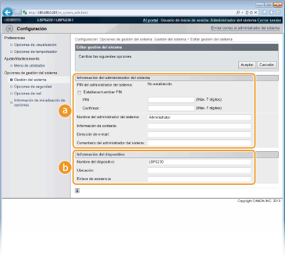
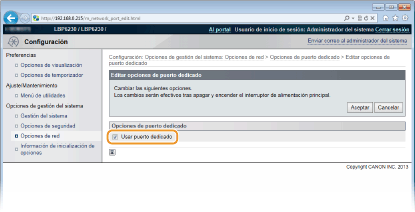
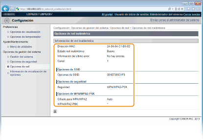

0KXF-03A
Esta sección describe los elementos de menú que pueden establecerse utilizando el IU remoto. La configuración predeterminada aparece marcada con una cruz ( ).
).
).|
Menú [Preferencias]
Menú [Ajuste/Mantenimiento]
Menú [Opciones de gestión del sistema]
|
Seleccione el idioma de la pantalla utilizado para las pantallas del IU remoto.
|
Idioma de IU remoto
Chinese (Simplified)
English
French
German
Italian
Japanese
Spanish
|
Inicie sesión en el IU remoto (Inicio del IU remoto)  [Configuración] [Opciones de visualización] [Editar] Seleccione el idioma de la pantalla [Aceptar]
[Configuración] [Opciones de visualización] [Editar] Seleccione el idioma de la pantalla [Aceptar]

[Idioma de IU remoto]
Selecciona el idioma de la pantalla utilizado para las pantallas del IU remoto.
Selecciona el idioma de la pantalla utilizado para las pantallas del IU remoto.
Configure las opciones relacionadas con la hora, por ejemplo, la zona horaria.
|
Zona horaria
UTC-12:00 a UTC-5:00
a UTC+12:00Usar horario de verano
Desactivado
Activado
Inicio
Enero a Marzo
a Diciembre1º a 2º
a ÚltimoLunes a Domingo
Fin
Enero a Noviembre
a Diciembre1º
a ÚltimoLunes a Domingo
Tiempo para autorreposo
Desactivado
Tras 1 minuto
Tras 5 minutos
Tras 10 minutos
Tras 15 minutos
Tras 30 minutos
Tras 60 minutos
Tiempo de apagado automático
Desactivado
Tras 1 hora
Tras 2 horas
Tras 3 horas
Tras 4 horas
Tras 5 horas
Tras 6 horas
Tras 7 horas
Tras 8 horas
|
Inicie sesión en el IU remoto (Inicio del IU remoto) [Configuración] [Opciones de temporizador] [Editar] Elementos de configuración [Aceptar]

[Zona horaria]
Establezca la zona horaria de la región donde se va a utilizar el equipo.

UTC
El Tiempo universal coordinado (UTC) es el estándar horario principal mediante el cual el mundo regula los relojes y la hora. El ajuste de la zona horaria UTC correcto se requiere para las comunicaciones a través de Internet.
Establezca la zona horaria de la región donde se va a utilizar el equipo.
UTC
El Tiempo universal coordinado (UTC) es el estándar horario principal mediante el cual el mundo regula los relojes y la hora. El ajuste de la zona horaria UTC correcto se requiere para las comunicaciones a través de Internet.
[Usar horario de verano]
Active o desactive el horario de verano. Si el horario de verano está activado, especifique las fechas de inicio y finalización del horario de verano.
Active o desactive el horario de verano. Si el horario de verano está activado, especifique las fechas de inicio y finalización del horario de verano.
[Tiempo para autorreposo]
El equipo entra en modo de reposo automáticamente si permanece inactivo durante un periodo de tiempo determinado. Especifique el periodo de tiempo que debe transcurrir hasta que el equipo entre automáticamente en modo de reposo. Recomendamos utilizar la configuración predeterminada para ahorrar la mayor cantidad de energía posible. Configuración del modo de reposo
El equipo entra en modo de reposo automáticamente si permanece inactivo durante un periodo de tiempo determinado. Especifique el periodo de tiempo que debe transcurrir hasta que el equipo entre automáticamente en modo de reposo. Recomendamos utilizar la configuración predeterminada para ahorrar la mayor cantidad de energía posible. Configuración del modo de reposo
[Tiempo de apagado automático]
Puede configurar el equipo para que se apague automáticamente tras haber permanecido inactivo durante un periodo de tiempo determinado. Esto evitará que se malgaste energía por haber olvidado desconectar el equipo. Especifique el periodo de tiempo que debe transcurrir hasta que el equipo se apague solo. Configuración de Apagado automático
Puede configurar el equipo para que se apague automáticamente tras haber permanecido inactivo durante un periodo de tiempo determinado. Esto evitará que se malgaste energía por haber olvidado desconectar el equipo. Especifique el periodo de tiempo que debe transcurrir hasta que el equipo se apague solo. Configuración de Apagado automático
Puede limpiar la unidad de fijación que se encuentra en el interior del equipo.
Limpie la unidad de fijación si en las impresiones aparecen rayas o puntos negros. Tenga en cuenta que no puede limpiar la unidad de fijación si el equipo tiene documentos a la espera de imprimirse. Para limpiar la unidad de fijación, necesitará papel normal de tamaño A4. Antes de empezar, cargue la bandeja multiuso o la ranura de alimentación manual con papel de tamaño A4 (Carga de papel en la bandeja multiuso Carga de papel en la ranura de alimentación manual).
Inicie sesión en el IU remoto (Inicio del IU remoto) [Configuración] [Menú de utilidades] [Limpieza] [Ejecutar] [Aceptar]

|
El papel entra lentamente hacia el interior del equipo y comienza la limpieza. Ésta habrá finalizado cuando el papel haya salido completamente.
La limpieza no puede cancelarse una vez comenzada. Espere hasta que termine (unos 90 segundos).
|
Puede especificar que se solicite un PIN (contraseña del administrador del sistema) al iniciar una sesión en el IU remoto en el modo Administrador del Sistema. También puede registrar información sobre el administrador del sistema, como el nombre y los datos de contacto. Además, puede registrar un nombre para identificar este equipo y registrar su ubicación.
|
Información del administrador del sistema
PIN del administrador del sistema
Nombre del administrador del sistema
Información de contacto
Dirección de e-mail
Comentario del administrador del sistema
Información del dispositivo
Nombre del dispositivo
Ubicación
Enlace de asistencia
|
Inicie sesión en el IU remoto en el modo Administrador del sistema (Inicio del IU remoto) [Configuración] [Gestión del sistema] [Editar] Elementos de configuración [Aceptar]

 [Información del administrador del sistema]
[Información del administrador del sistema]Especifique el PIN y otros datos del administrador del sistema. Configuración de contraseñas de administrador del sistema
 [Información del dispositivo]
[Información del dispositivo][Nombre del dispositivo]
Introduzca hasta 32 caracteres alfanuméricos como nombre del equipo.
Introduzca hasta 32 caracteres alfanuméricos como nombre del equipo.
[Ubicación]
Introduzca hasta 32 caracteres alfanuméricos en la ubicación del equipo.
Introduzca hasta 32 caracteres alfanuméricos en la ubicación del equipo.
[Enlace de asistencia]
Introduzca un enlace a la información de soporte técnico del equipo. El enlace puede tener hasta 128 caracteres alfanuméricos. El enlace aparece en la página del portal (página principal) del IU remoto.
Introduzca un enlace a la información de soporte técnico del equipo. El enlace puede tener hasta 128 caracteres alfanuméricos. El enlace aparece en la página del portal (página principal) del IU remoto.
Active o desactive la comunicación cifrada a través de SSL y del filtrado de paquetes con dirección IP.
Opciones de IU remoto
Seleccione si desea utilizar la comunicación cifrada SSL. Activación de la comunicación cifrada SSL para el IU remoto
|
Usar SSL
Desactivado
Activado
|
Opciones de clave y certificado
Registre pares de claves o genérelos en el equipo. Puede comprobar y verificar los pares de claves registrados. Configuración de las opciones de los pares de claves y los certificados digitales
Opciones de certificado de CA
Registre un certificado de CA. Un certificado de CA viene ya preinstalado. Puede comprobar y verificar los certificados de CA registrados. Configuración de las opciones de los pares de claves y los certificados digitales
Filtro de direcciones IP
Especifique si desea permitir o rechazar los paquetes que se envían a o se reciben desde dispositivos con direcciones IP especificadas.
Dirección IPv4: Filtro de salida
No permita que el equipo envíe datos a un ordenador con una dirección IPv4 especificada. Especificación de direcciones IP para las reglas de firewall
|
Usar filtro
Desactivado
Activado
Directiva prefijada
Rechazar
Permitir
|
Dirección IPv4: Filtro de entrada
Rechace los datos que recibe el equipo desde un ordenador con una dirección IPv4 especificada. Especificación de direcciones IP para las reglas de firewall
|
Usar filtro
Desactivado
Activado
Directiva prefijada
Rechazar
Permitir
|
Dirección IPv6: Filtro de salida
No permita que el equipo envíe datos a un ordenador con una dirección IPv6 especificada. Especificación de direcciones IP para las reglas de firewall
|
Usar filtro
Desactivado
Activado
Directiva prefijada
Rechazar
Permitir
|
Dirección IPv6: Filtro de entrada
Rechace los datos que recibe el equipo desde un ordenador con una dirección IPv4 especificada. Especificación de direcciones IP para las reglas de firewall
|
Usar filtro
Desactivado
Activado
Directiva prefijada
Rechazar
Permitir
|
Filtro de direcciones MAC
Especifique si desea permitir o rechazar los paquetes que se envían a o se reciben desde dispositivos con direcciones MAC especificadas.
Filtro de salida
No permita que el equipo envíe datos a un ordenador con una dirección MAC especificada. Especificación de direcciones MAC para las reglas de firewall
|
Usar filtro
Desactivado
Activado
Directiva prefijada
Rechazar
Permitir
|
Filtro de entrada
Rechace los datos que recibe el equipo desde un ordenador con una dirección MAC especificada. Especificación de direcciones MAC para las reglas de firewall
|
Usar filtro
Desactivado
Activado
Directiva prefijada
Rechazar
Permitir
|
Configure las opciones relacionadas con las funciones de red.
Opciones de TCP/IP
Especifique las opciones para utilizar el equipo en una red TCP/IP, como las opciones de la dirección IP.
Opciones de IPv4
Especifique las opciones para utilizar el equipo en una red IPv4. Configuración de la dirección IPv4 Configuración de DNS
|
Opciones de dirección IP
Obtención automática
Seleccionar protocolo
Desactivado
DHCP
BOOTP
RARP
IP automática
Activado
Desactivado
Dirección IP
Máscara de subred
Dirección de puerta de enlace
Opciones de DNS
Dirección de servidor DNS primario
Dirección de servidor DNS secundario
Nombre de host
Nombre de dominio
Actualización dinámica de DNS
Desactivado
Activado
Intervalo de actualización dinámica de DNS: 0 a 24
a 48 (horas) Opciones de mDNS
Usar mDNS
Desactivado
Activado
Nombre de mDNS
Opciones de DHCP
Obtener nombre de host
Desactivado
Activado
Actualización dinámica de DNS
Desactivado
Activado
|
Opciones de IPv6
Especifique las opciones para utilizar el equipo en una red IPv6. Configuración de direcciones IPv6 Configuración de DNS
|
Opciones de dirección IP
Usar IPv6
Desactivado
Activado
Dirección sin estado
Desactivado
Activado
Usar dirección manual
Desactivado
Activado
Dirección IP
Longitud de prefijo: 0 a 64
a 128Dirección del enrutador prefijado
Usar DHCPv6
Desactivado
Activado
Opciones de DNS
Dirección de servidor DNS primario
Dirección de servidor DNS secundario
Usar el mismo nombre de host/nombre de dominio que para IPv4
Desactivado
Activado
Nombre de host
Nombre de dominio
Actualización dinámica de DNS
Desactivado
Activado
Guardar dirección manual
Guardar dirección con estado
Guardar dirección sin estado
Intervalo de actualización dinámica de DNS: 0 a 24
a 48 (horas) Opciones de mDNS
Usar mDNS
Desactivado
Activado
Usar mismo nombre mDNS que IPv4
Desactivado
Activado
Nombre de mDNS
|
Opciones de WINS
Especifique las opciones de los Servicios de nombres Internet de Windows (WINS), que proporcionan un nombre de NetBIOS para resoluciones de direcciones IP en un entorno de red mixto de NetBIOS y TCP/IP. Configuración de WINS
|
Resolución WINS
Desactivado
Activado
Dirección de servidor WINS
ID de ámbito
|
Opciones impresión LPD
Active o desactive LPD, un protocolo de impresión que puede utilizarse en cualquier plataforma de hardware o sistema operativo. Configuración de protocolos de impresión y de servicios web
|
Usar impresión LPD
Desactivado
Activado
|
Opciones de NetBIOS
Establezca un nombre de NetBIOS y un nombre de un grupo de trabajo que deben establecerse para registrar este equipo con un servidor WINS. Configuración de NetBIOS
|
Nombre de NetBIOS
Nombre de grupo de trabajo
|
Opciones impresión RAW
Active o desactive RAW, un protocolo de impresión específico de Windows. Configuración de protocolos de impresión y de servicios web
|
Usar impresión RAW
Desactivado
Activado
|
Opciones de WSD
Active o desactive la búsqueda y la obtención automáticas de información para el equipo utilizando el protocolo WSD disponible en Windows Vista/7/8/Server 2008/Server 2012. Configuración de protocolos de impresión y de servicios web
|
Usar impresión WSD
Desactivado
Activado Usar navegación WSD
Desactivado
Activado
Usar detección multidifusión
Desactivado
Activado
|
Opciones de SSL
Especifique el par de claves que se utilizarán cuando se establezca una comunicación cifrada SSL con el IU remoto. Activación de la comunicación cifrada SSL para el IU remoto
Opciones de detección multidifusión
Especifique si el equipo debe responder a los paquetes de detección cuando se ejecute en la red la detección multidifusión utilizando el Protocolo de ubicación de servicios (SLP). Configuración de la comunicación SLP con imageWARE
|
Responder a detección
Desactivado
Activado
Nombre de ámbito
|
Opciones de número de puerto
Cambie los números de puerto para los protocolos según su entorno de red. Cambios en los números de puerto
|
LPD
1 a 515
a 65535RAW
1 a 9100
a 65535HTTP
1 a 80
a 65535SNMP
1 a 161
a 65535Detección multidifusión WSD
1 a 3702
a 65535Detección multidifusión
1 a 427
a 65535 |
Opciones de tamaño de MTU
Seleccione el tamaño máximo de los paquetes que envía o recibe el equipo. Cambios en la unidad máxima de transmisión
|
Tamaño de MTU
1300
1400
1500
|
Opciones de SNTP
Especifique si desea obtener la hora desde un servidor de la red. Configuración de SNTP
|
Usar SNTP
Desactivado
Activado
Nombre del servidor NTP
Intervalo de sondeo: 1 a 24
a 48 (horas) |
Opciones de SNMP
Especifique las opciones para supervisar y controlar el equipo desde un ordenador que utilice software compatible con SNMP. Supervisión y control del equipo con SNMP
|
Opciones de SNMPv1
Usar SNMPv1
Desactivado
Activado
Nombre de comunidad 1
Permiso de acceso a MIB 1
Nombre de comunidad 2
Permiso de acceso a MIB 2
Opciones de comunidad dedicada
Desactivado
Lectura/Escritura
Sólo lectura
Opciones de SNMPv3
Usar SNMPv3
Desactivado
Activado
Opciones de usuario 1/Opciones de usuario 2/Opciones de usuario 3
Opciones de contexto
Opciones para obtener la información de gestión de la impresora
Obtener información de gestión de la impresora del host
Desactivado
Activado
|
Opciones de puerto dedicado
Active o desactive el puerto dedicado. El puerto dedicado se utiliza cuando se emplea la Ventana Estado de la impresora para configurar el equipo y obtener información sobre él.
|
Usar puerto dedicado
Desactivado
Activado
|
Inicie sesión en el IU remoto en el modo Administrador del sistema (Inicio del IU remoto) [Configuración] [Opciones de red] [Opciones de puerto dedicado] [Editar] Seleccione si quiere utilizar [Aceptar] Reinicie el equipo

[Usar puerto dedicado]
Marque la casilla de verificación para utilizar el puerto dedicado. Desmárquela si no desea utilizarlo.

Si desmarca la casilla de verificación, la Ventana Estado de la impresora no podrá obtener información del equipo.
Marque la casilla de verificación para utilizar el puerto dedicado. Desmárquela si no desea utilizarlo.
Si desmarca la casilla de verificación, la Ventana Estado de la impresora no podrá obtener información del equipo.
Tiempo de espera para conexión al inicio
Especifique un tiempo de espera para conectarse a una red. Seleccione la opción en función de su entorno de red. Configuración de un tiempo de espera para conectarse a una red
|
Tiempo de espera
0
a 300 (segundos) |
Opciones del controlador Ethernet
Seleccione el modo de comunicación de Ethernet (Half Duplex/Full Duplex) y el tipo de Ethernet (10BASE-T/100BASE-TX) y muestre la dirección MAC. Configuración de las opciones de Ethernet
|
Autodetectar
Desactivado
Activado
Modo de comunicación
Half Duplex
Full Duplex
Tipo de Ethernet
10BASE-T
100BASE-TX
Dirección MAC (Solo visualización)
|
Opciones de red inalámbrica
Puede consultar las opciones de red inalámbrica y la información de estado. Las opciones de red inalámbrica no pueden cambiarse desde el IU remoto. Configure la red inalámbrica desde el ordenador utilizando MF/LBP Network Setup Tool. (Conexión a una red inalámbrica)
Inicie sesión en el IU remoto en el modo Administrador del sistema (Inicio del IU remoto) [Configuración] [Opciones de red] [Opciones de red inalámbrica] Compruebe la configuración y la información

[Dirección MAC]
Muestra la dirección MAC de la red inalámbrica.
Muestra la dirección MAC de la red inalámbrica.
[Estado red inalámbrica]
Muestra el estado de conexión (intensidad de la señal) de la red inalámbrica.
Muestra el estado de conexión (intensidad de la señal) de la red inalámbrica.
[Información del último error]
Muestra información sobre el último fallo de conexión con una red inalámbrica.
Muestra información sobre el último fallo de conexión con una red inalámbrica.
[Canal]
Muestra el canal de red inalámbrica que se está utilizando.
Muestra el canal de red inalámbrica que se está utilizando.
[Opciones de SSID]
Muestra el SSID del router de red inalámbrica conectado.
Muestra el SSID del router de red inalámbrica conectado.
[Opciones de seguridad]
Muestra el tipo de cifrado que se está aplicando.
Muestra el tipo de cifrado que se está aplicando.
[Opciones de WPA/WPA2-PSK]/[Opciones de WEP]
Muestra las opciones actuales de WPA/WPA2-PSK y WEP.
Muestra las opciones actuales de WPA/WPA2-PSK y WEP.
Inicializa la configuración y hace que el equipo recupere el estado predeterminado de fábrica.
Inicializar menú
Hace que la configuración del menú [Preferencias] vuelva a ser la configuración predeterminada de fábrica. Inicialización de la configuración de preferencias
Inicializar opciones de gestión del sistema
Hace que la configuración del menú [Opciones de gestión del sistema] vuelva a ser la configuración predeterminada de fábrica. Inicialización de las opciones de administración del sistema
Inicializar clave y certificado
Hace que las opciones de clave y certificado vuelvan a la configuración predeterminada de fábrica. Inicialización de configuración de clave y de certificado